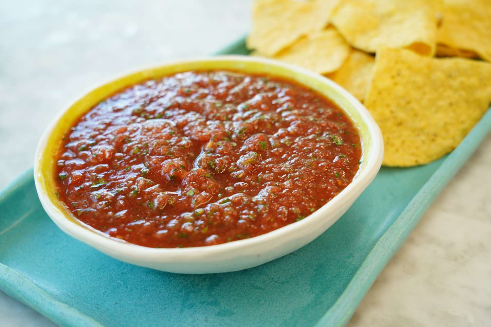

Salsa

Description
This salsa is a smooth, punchy sauce with a bright tomato base that flows like a dream over chips. IT's got blended ripe tomatoes, a kick of jalapeno heat, a hint of sharp onion and lime to freshen it up. Thinner than a chunky mix, it's got just enough liquid to dip or drizzle.
Ingredients
- 4 medium Ripe Tomatoes (roughly chopped)
- 1/2 Red Onion (roughly chopped)
- 1 jalepeno (seeded and roughly chopped)
- 1 lime (juiced)
- 1/4th cup Fresh Cilantro (chopped)
- 1/2 teaspoon Salt
Steps
- Add chopped tomatoes, red onion, and jalepeno into a blender or food processor.
- Pulse it a few times until it's mostly smooth but still has a little texture - not totally pureed.
- Squeeze in lime juice, add the salt and cilantro and blend it for a quick second to mix.
- Check the consistency, uou can add a 1-2 tablesppons of water if it is too thick.
- Taste, adjust seasoning as needed.
- Serve and enjoy!
Home